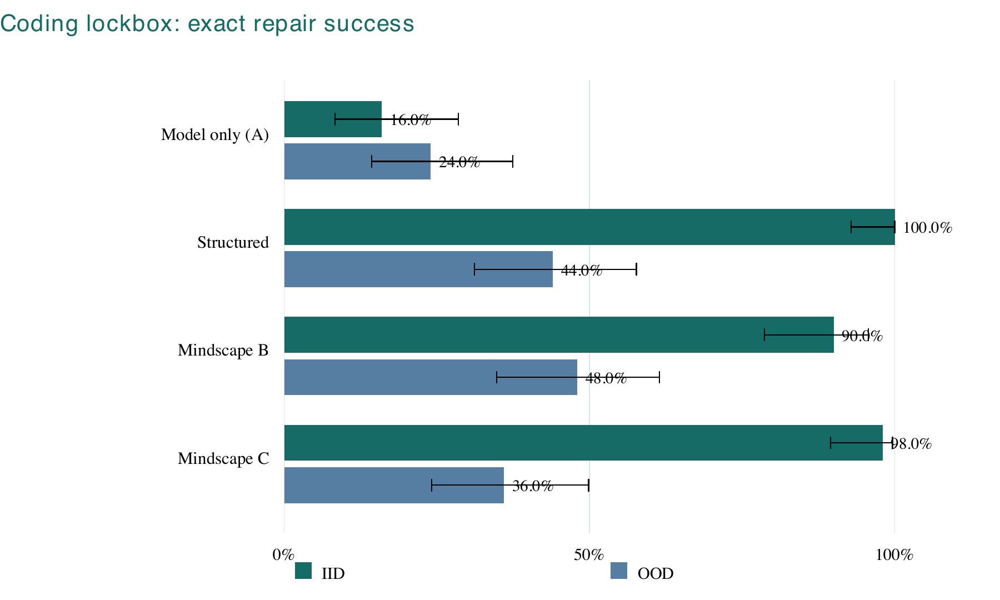
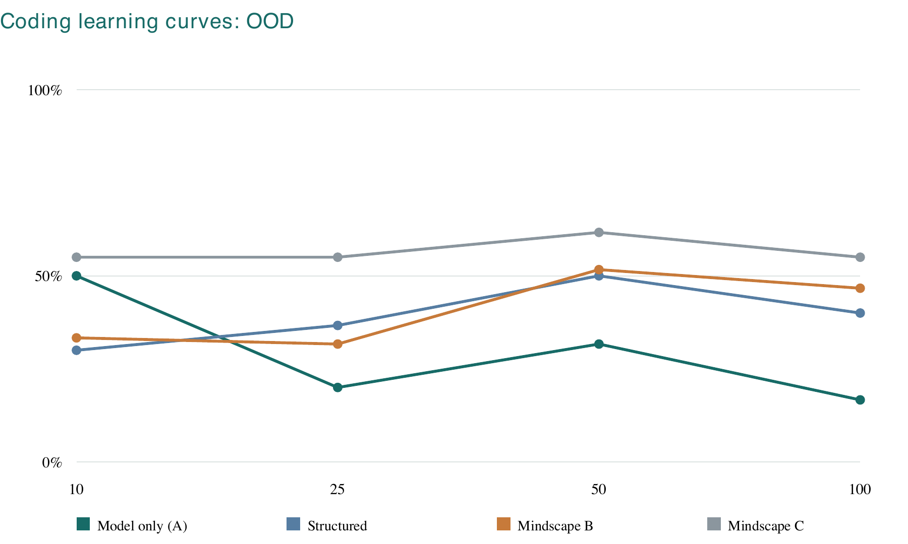
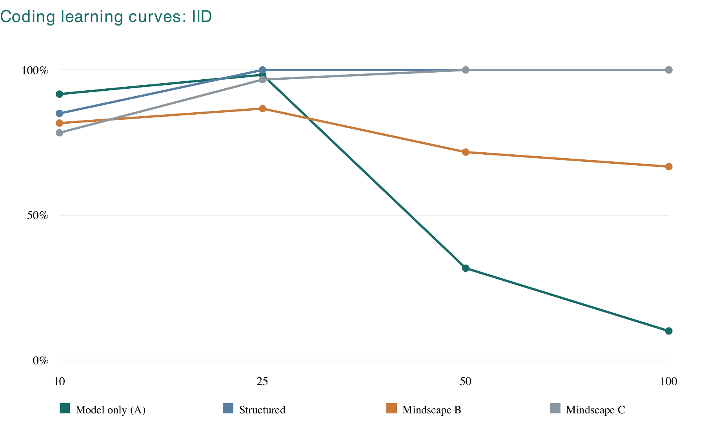
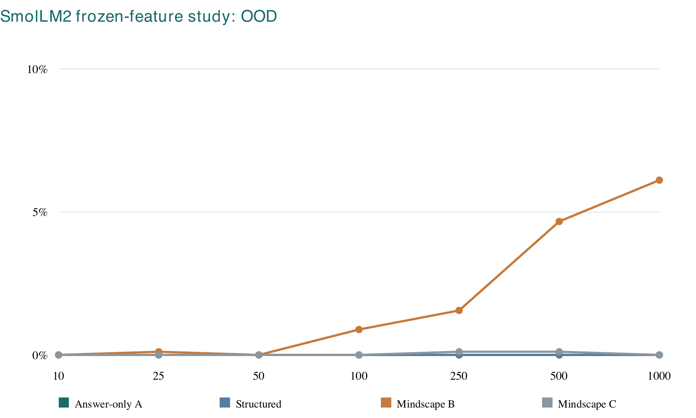
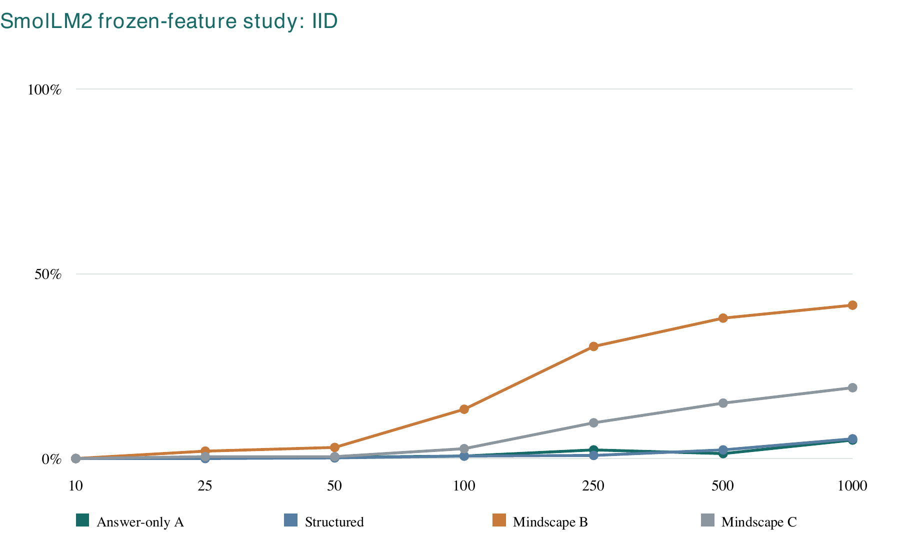
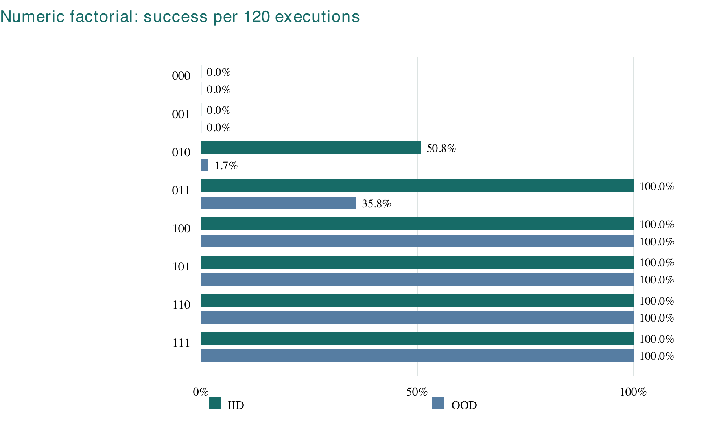
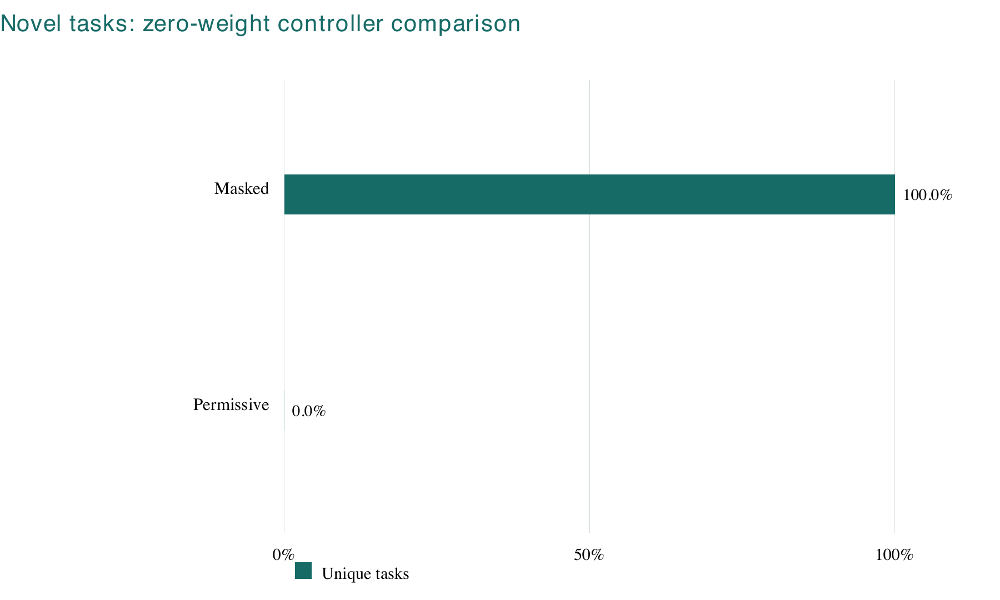
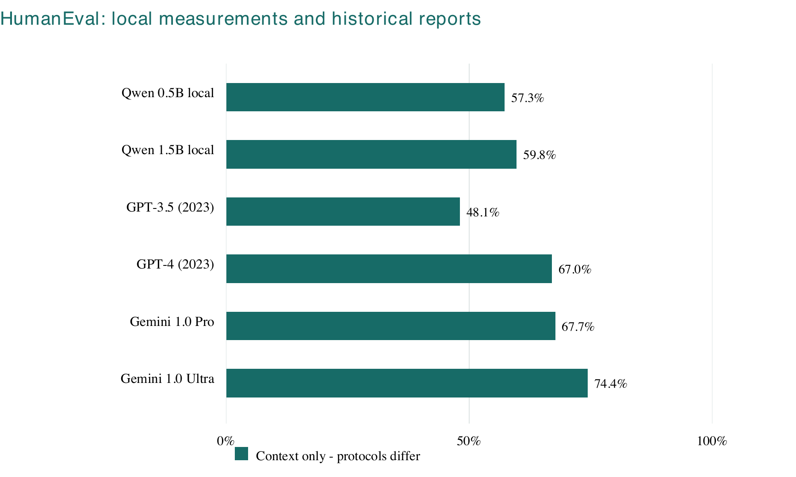
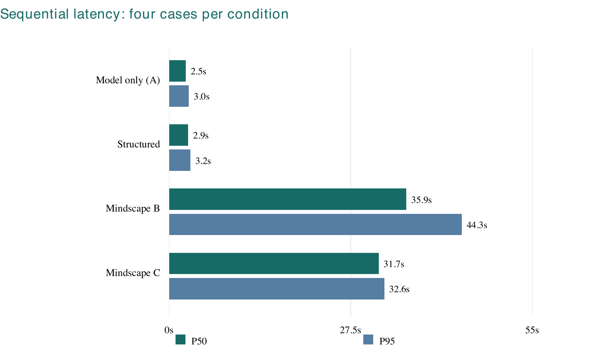

Scientific findings
Read mathematical learning failures, matched Python repair comparisons and the physics NO-GO diagnosis.
Read the evidence ↗Explore implementation notes, research publications, architecture records, benchmark results and reproducibility materials.
October 2026 / Start here
Explore Mindscape Epitome, our latest applied reasoning system, and the engineering decisions behind it.
cd integrations/hybrid
./setup.sh
./start.sh
# Open http://127.0.0.1:8765Use the feature commit eaf0c46 when evaluating the newer grounded follow-ups. This public website presents documentation and evidence; it does not host model inference.
Mindscape workspace

Responsive dark interface, browser-local conversations, projects, a Library of saved responses, local search and recoverable deletion. Mathematical expressions, exact Python output and SQL tables retain their original values and provenance.
The application runs locally after the pinned model is downloaded once. Chats and projects stay in the browser; there is no cloud-account synchronization. Work, Scheduled, microphone and upload features are unavailable.
Versioned reports
Find versioned studies across mathematics, programming, physical reasoning, neural architecture and experimental validation.
Research update · 15 October 2026
The library now includes V4/V5 qualification results, R5 shared-learning limits, recovered mathematics and physics findings, and R5.4 engineering readiness. Each new report is copied from a pinned Git commit with a source-hash manifest.
Start with the V3 integration handoff, then inspect each domain’s scientific findings and original protocols. Historical PDFs and figures remain available unchanged.
Read mathematical learning failures, matched Python repair comparisons and the physics NO-GO diagnosis.
Read the evidence ↗Download current summaries, provenance, native outcomes and independent replay verification.
Read the evidence ↗Existing local assets and native MPS are required. No retraining or model download is part of the integration workflow.
Read the evidence ↗Learned cross-domain transfer: NOT YET ESTABLISHED.
Explore explicit state, bounded actions, and verified execution.
Explore the track →Follow actual policy observations, tool calls, and terminal outcomes.
Explore the track →Read locked coding evaluations, masking controls, and performance limits.
Explore the track →Try a different keyword or reset the filters.

Download the research figure as a PDF.

Download the research figure as a PDF.

Download the research figure as a PDF.

Download the research figure as a PDF.

Download the research figure as a PDF.

Download the research figure as a PDF.

Download the research figure as a PDF.

Download the research figure as a PDF.

Download the research figure as a PDF.
We document model and source identities, experimental conditions, preserved outcomes and known limitations wherever evidence is available.